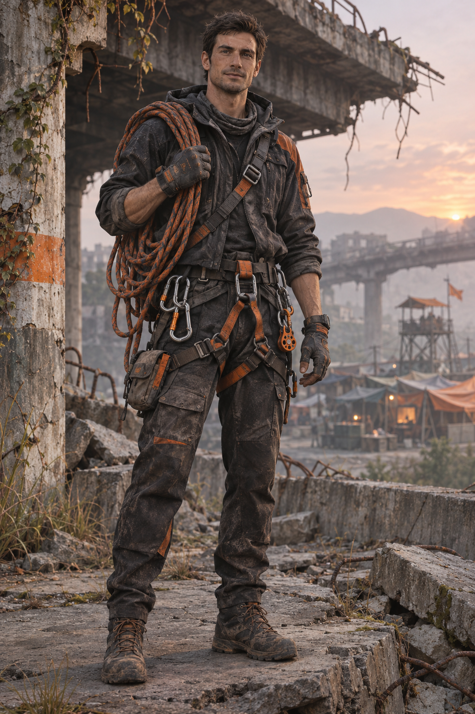

O colapso deixou pessoas isoladas em telhados e pavimentos sem saída. Corda começou a usar cordas e pontos de ancoragem para abrir caminhos de retirada.
PROPOSTA DE LORE // EM REVISÃO
CORDA.
Corda trabalha em telhados, andares altos e estruturas comprometidas. Seu arnês gasto e as luvas reforçadas foram adaptados para resgates em lugares onde uma escada não alcança.
ABRIR ARQUIVO FOTOGRÁFICO →
Este dossiê apresenta uma proposta revisável com base no conceito visual e na função do personagem. Idade, nome civil, datas e vínculos pessoais ficam em aberto quando ainda não foram definidos.
O que a extinção
deixou nele.
Os registros abaixo organizam sua função e sua trajetória em linhas gerais. As cenas específicas continuam abertas à revisão.
A cicatriz atravessando uma sobrancelha ficou visível; ele nunca tentou escondê-la. A experiência em altura ensinou que cada resgate precisa de uma linha de retorno segura.
No grupo, Corda prepara ancoragens, orienta a subida e mantém a corda estável enquanto outras pessoas atravessam. Faz piadas quando todos estão seguros e economiza palavras durante a missão.
Resgate em altura
- Resgate em altura
- Uso e inspeção de arnês e cordas
- Extração em estruturas danificadas
Cicatriz atravessa uma sobrancelha; rosto descoberto.
O que carrega
por dentro.
Ágil, bem-humorado fora de perigo e extremamente concentrado em campo. Corda confia no trabalho em equipe e não apressa quem está com medo.
“Eu seguro a corda. Você escolhe o próximo passo.”